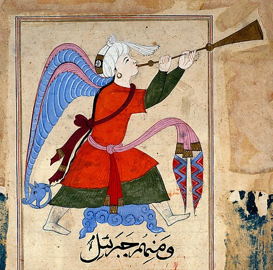

بِسْمِ اللهِ الرَّحْمَٰنِ الرَّحِيمِ
A Book of Wonders · Entry the Eighth
Isrāfīl — The Angel of the Trumpet
إِسْرَافِيل

Physical Description
Isrāfīl is one of the four archangels whose specific function is to blow the الصُّور (al-Ṣūr), the great trumpet, at the command of God. He has Israfil has four wings, one in the East, one in the West, one covering his legs and one shielding his head and face in fear of God. He is depicted being poised at all times with the trumpet at his lips, awaiting the divine command to blow. He has been in this state of readiness since his creation. (Kitāb Aḥwāl al-Qiyāma)
Lore & Significance
Isrāfīl is the angel responsible for blowing the trumpet that signals the arrival of the Day of Judgement . The blowing of the trumpet occurs in stages. The first blast will cause all creatures to die except those Allah SWT chooses. Then, the remaining creatures will have their lives taken and Allah SWT will be the only one who survives. Allah SWT will resurrect Israfil to blow the trumpet for the second time, which will raise all creaters to stand before God for the Final Judgment.
Isrāfīl stands at the end of the sequence of the major signs: the Dajjāl, the descent of ʿĪsā, the release of Yaʾjūj wa-Maʾjūj, and the emergence of al-Dābba. After after all these have come to pass, it is Isrāfīl who sounds the ultimate signal, announcing the definitive end of this world and the opening of the next.
The Qurʾān refers to the blowing of the trumpet in multiple verses, including Sūrat al-Zumar (39:68): "And the trumpet will be blown, and whoever is in the heavens and whoever is on the earth will fall dead, except whom Allah wills. Then it will be blown again, and at once they will be standing, looking on."
Thus concludes the Book of Wonders Concerning the Beast of the Resurrection.
And God alone knows the full reality of what He has created.
وَاللهُ أَعْلَمُ
I pledge my honor that this paper represents my own work
in accordance with University regulations.
\s\ Mustafa Tajammul